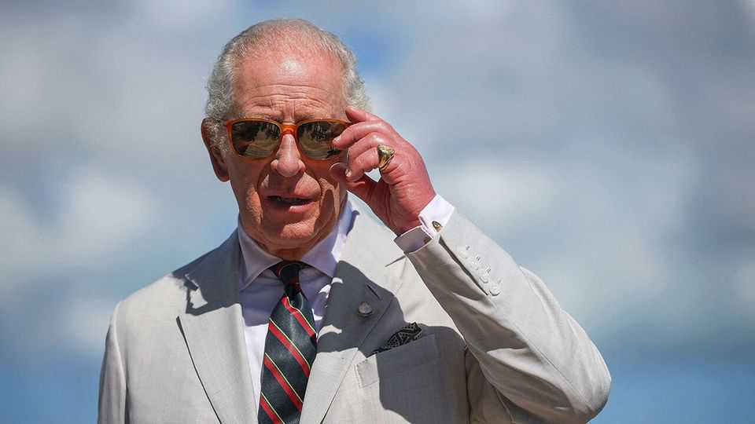
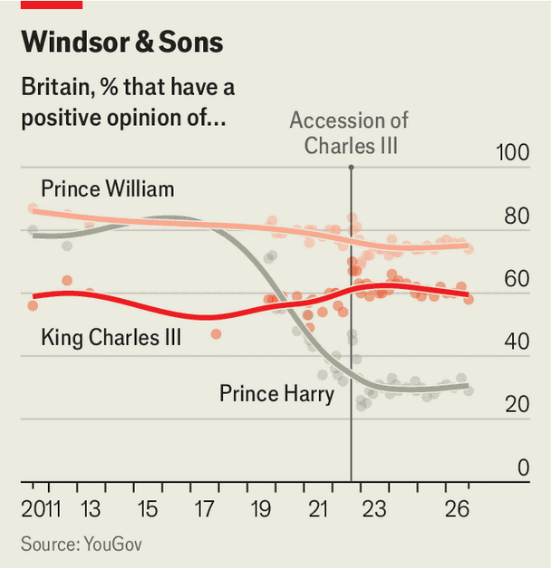

How is King Charles III doing?
Quite well. Not least because he has stopped complaining

Nov 5th 2026
“My great problem in life”, King Charles III once said as Prince of Wales, “is that I do not really know what my role in life is.” Becoming king in 2022 has amply answered that particular complaint. Charles is now Charles the Third, by the Grace of God of the United Kingdom of Great Britain and Northern Ireland and of His other Realms and Territories, King. He is Head of the Commonwealth. He is also Keeper of the Cows, Seigneur of the Swans and the Duke of Normandy. (Which might come as news to the French. Not to mention the cows.)
Today the question is not whether Charles has a role but whether he is doing his many jobs well. It has been four years since the longest-reigning monarch in British history died and the longest-serving heir-apparent took over. Four years is, in one way, no time at all: Charles’s mother reigned for 17 times as long. Yet in this time the king has been diagnosed with cancer, seen one brother arrested and survived four British prime ministers.
He has welcomed Donald Trump for a state visit and endured the president’s threats to annex his realm of Canada. On November 3rd he gave a speech in Antigua as head of the Commonwealth. He broached the subject of slavery (a tricky matter because some countries are demanding reparations), calling it a “shameful chapter of history” that filled his soul “with the most profound personal sorrow”.
Britain’s most prominent job—CEO of the Firm—is also its oddest. Unlike most CEOs Charles did not apply for his post, interview for it or, apparently, want it. (Though like all CEOs, heads of the Firm can be removed, as the king’s predecessor Charles I proved.) At first, many had doubts about Charles III. Are “the monarchy’s days numbered?” wondered a British headline in 2022. “Traditional monarchy died with the queen”, ran another in 2023. One commentator suggested that the monarchy was like an appendix: “We’ve long evolved past needing them.” Everyone kept forgetting to call Charles “King”.

Yet Charles is doing quite well. According to YouGov, a pollster, his favourability rating stands at 58%. That is not as high as Prince William’s (74%) but higher than Prince Harry’s (29%). Robert Hardman, the king’s biographer, says that Charles has “confounded his critics” in his reign so far.
Several things have helped Charles, including a honeymoon period, a strong work ethic (he was back to work within three months of his cancer diagnosis in 2024) and a willingness to sack poor performers: he stripped the Andrew formerly known as “Prince” of his title in 2025. The king’s changed attitude has also helped. Broadly speaking the moanier the royal, the less they are liked. The late queen (reputed motto: “Never complain, never explain”) was loved, as Princess Anne continues to be. The emotionally incontinent Harry and Meghan are increasingly loathed. Charles has, finally, learnt his lesson: the former “Prince of Wails” has largely stopped complaining.
Good timing has helped too. For decades Charles seemed like a crank. He talked to plants and fretted about the Patagonian toothfish. He built Poundbury, a likeable British town that intellectuals like to dislike. Everyone laughed at him. But things have changed. Sustainable farming is spreading, Poundbury is expanding, architecture is softening. There is a mood, insiders say, of “I told you so.”
The final cause of success is, perhaps, his pulling power. To stand in a room filled with world leaders and watch Charles enter is startling. All—Volodymyr Zelensky, Emmanuel Macron, Giorgia Meloni—have eyes only for him. As he enters heads turn, conversations silence, ears strain to catch his every word. World leaders have achieved their greatness; Charles had his thrust upon him. Yet he is the one they want to meet. And, from state visits to AI summits, he leverages this. Meeting the king is, says Mr Hardman, “a bucket-list item for world leaders”.
This, as few know better than the king, is ludicrous. In 1995 Charles produced a Shakespeare anthology. In it he singled out a speech on kingship in “Henry V“ that left him “wondering in amazement” at Shakespeare’s “insight”. It is not a cheery speech. Kingship, Henry says, is a “hard condition”. For what “have kings” that commoners do not, “save ceremony”? A king is gossiped about and judged. He must empathise with his people’s sorrows but has little rest himself. Some years ago Charles sneaked incognito into a production of “Henry V”. Sir Jonathan Bate, an academic, recalls that as that speech began, the future king gave “a kind of shiver”.
What is the point of a king? To judge from Shakespeare: not much. Merely to articulate others’ feelings and not bang on about his own. To provide ceremony. A hard condition; possibly a pointless one.
But then earlier this year, Charles was invited to America. The old king stood to address its new “king” in Congress. And, as Charles gently teased and reprimanded Mr Trump, he was given one standing ovation after another. It was nothing: ceremony, mere ceremony. But ceremony can be useful. And these days people sometimes even remember to call Charles “King”. ■